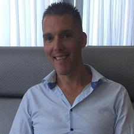

- Christophe Devleeshouwer
- 2 Rue de Harlez, 4300 Liège
- Nationalité: Belge
- Email: cdevl3749@gmail.com
Développeur Full-Stack
Python & Django
Formations
1993-1996:
Bachelier en sciences informatiques - Université catholique de Louvain la Neuve
1996-1997:
Formation Administration système Linux - LIFOSUP Formation cours du soir
1998-2003:
Formation C++ - Centre de Guidance Heysel
Expériences Professionelles
Delhaize:
Actuellement
Technicien support PC réseaux
- Assurer l'assemblage et l'intégration de PC dans un environnement réseau
- Asssurer la maintenance et le dépannage de PC dans un environnement réseau Windows/Linux
- Gérer les pannes, diagnositquer, réparer et s'assurer du bon fonctionnment
MIRH:
2018-2019
IT Consultant
- A créer, testé et déployé des produits logiciels évolutifs
- A identifié et suggérer de nouvelles technologies
- A assuré la maintenance des applications existantes
Technifutur ASBL - Seraing
2018-2019
Formateur informatique - Freelance
- A doner des formations Administration Linux
- A donner des formations PHP/MYSQL
- A donner des formations Crystal Reports
GIEI - Louvain la Neuve
2014-2018
Programmeur C++
- A rédigé des rapports complets pour documenter les bogues et les erreurs de conception
- A rédiger et intégrer des scripts dans le système de gestion du contenu
- A développé des améliorations du code
Systémat Computer
2003-2014
Programmeur C++
- A développé des correctifs et des améliorations du code
- A rédiger et mis en oeuvre des scripts pour améliorer l'expérience utilisateur
- A assuré la maintenance des applications existantes
Compétences
- C/C++
- Phyton & Django
- HTML/CSS
- PHP/MYSQL
- Crystal Reports